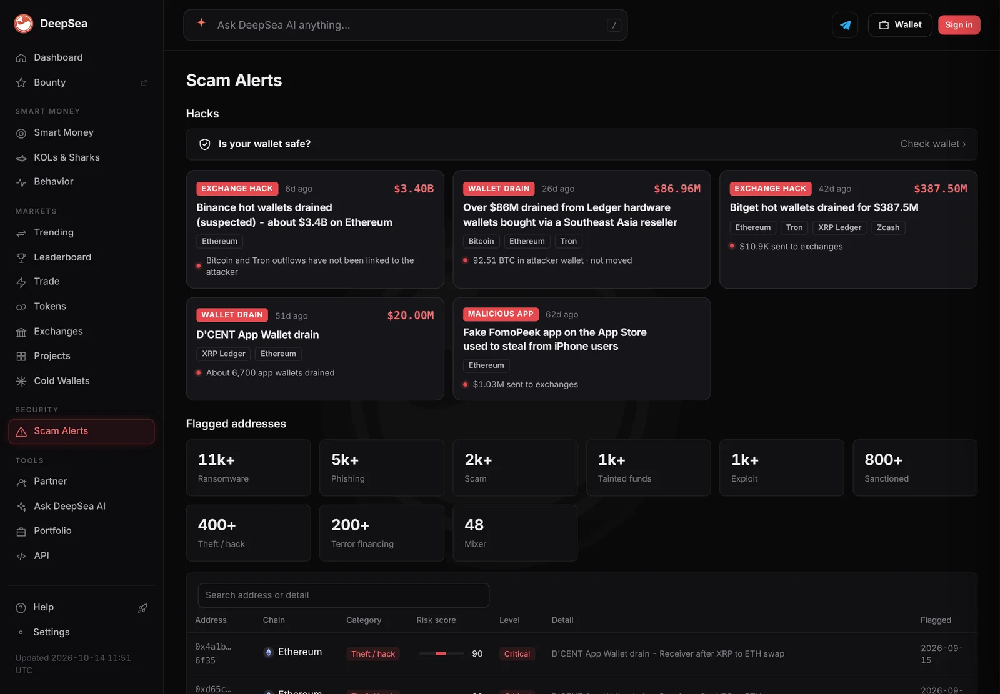
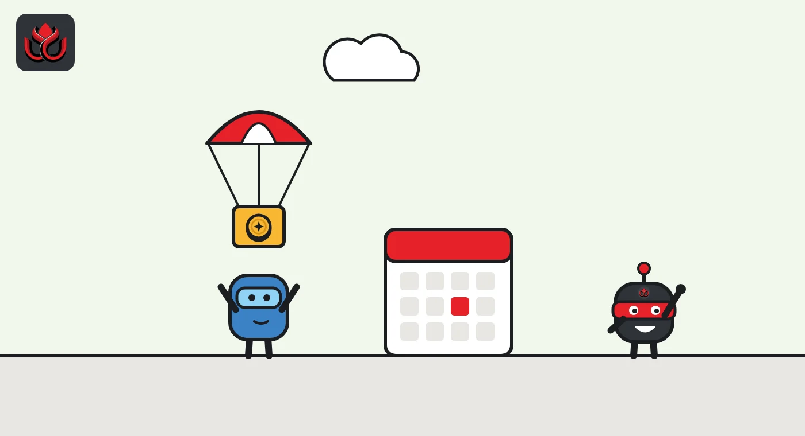
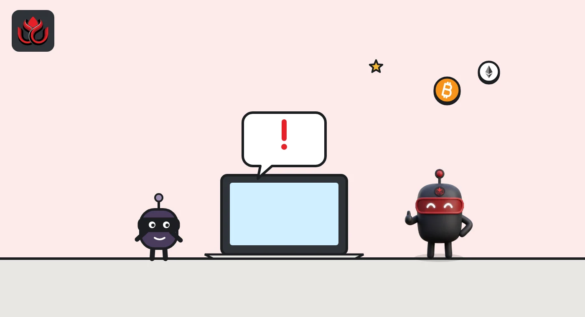

How crypto airdrops work, and how to spot the scams that copy them
An airdrop is a free drop of tokens to wallets, usually as a reward for early users. Real airdrops never ask for your seed phrase. Most scams instead trick you into signing a transaction on a fake claim site.
Key points
- An airdrop sends tokens to wallets for free, often to reward people who used a product before it had a token.
- Real airdrops usually need a claim on the project's own site within a set window. Unclaimed tokens are often forfeited.
- No real airdrop asks for your seed phrase. Most airdrop scams use a fake site to get you to approve or sign a transaction.
- Unexpected tokens that point you to a website are a classic trap. Check them on a block explorer before touching them.
 What DeepSea's data shows
What DeepSea's data shows
DeepSea keeps a database of risky addresses. On November 2 its scam alerts page listed more than 5,000 addresses flagged for phishing and more than 2,000 flagged as scams.
Fake airdrops follow the news. After the October Binance breach, DeepSea's incident page warned users not to click links promising Binance refunds, compensation or airdrops, and never to enter a recovery phrase through a link sent by message or email.

Data: DeepSea (desea.io), checked November 2, 2026, 7:59 a.m. ET.
What is a crypto airdrop?
A crypto airdrop is when a project gives tokens away to a list of wallet addresses. MetaMask, the wallet maker, describes it as a third party sending tokens to your wallet, often to reward use of an app or a blockchain, or to promote a new project. It adds that the value of those tokens is never guaranteed and is often negligible or fragile.
Airdrops are part of a project's tokenomics, the plan for who gets its tokens. CoinMarketCap groups them with community incentives, which send supply to users rather than investors. A common form is the retroactive airdrop: people who used a product in the past get tokens based on what they did.
How does a real airdrop work?
Most airdrops follow the same pattern:
- Activity. Users try a product, often while it runs a points program that tracks deposits, trades or referrals.
- Snapshot. The team records eligible wallets at a cutoff date and screens out fake accounts (Sybils, one person posing as many users).
- Checker. An eligibility checker on the official site shows each wallet's allocation.
- Claim. Users connect the same wallet on the official site and claim during a fixed window.
The details matter. Some allocations are fully unlocked at claim, others vest over months. Windows close, and unclaimed tokens usually do not come back. When Pharos closed its PROS claim, LC Insight reported that unclaimed tokens went to the foundation, not to a burn. Some projects pay in other assets: StandX canceled its token and paid a one-time DUSD airdrop instead.

Why do crypto projects do airdrops?
Airdrops put tokens in the hands of people who already use a product, rather than only investors. That spreads ownership, rewards early users and gives a new token a crowd of holders on day one. It also works as marketing: an airdrop announcement draws attention to a launch.
Many airdrops are the final step of a points program. Sophon's documentation, for example, says its farming program awarded Sophon Points for deposits, and that those points informed the SOPH reward allocations published later.
Airdrops also add supply. Tokenomist lists airdrops among the sources of new supply that dilute existing holders, and CoinMarketCap's tokenomics guide says circulating supply leaves out tokens that are locked or held in reserve.
How do airdrop scams work?
Airdrop scams copy the shape of a real airdrop and add one poisoned step. The most common versions:
- The fake claim site. Ethereum.org's security page says scam projects send you a token or NFT, then send you to a fake website to claim it. The claim asks you to approve a transaction that hands control of your funds to the scammer, or simply sends your funds to them.
- The token with a link. MetaMask warns about unexpected tokens that seem valuable, and about block explorer pages showing a fake error message that points to a website. In its words, "The fraudulent site is where the phishing takes place."
- The memo airdrop. In a public service announcement on June 3, 2025, the FBI said criminals sent unsolicited NFTs to Hedera wallet users with a link in the memo. The link connected wallets to a fraudulent app that asked for login details and seed phrases.
- Fake announcements. The same FBI notice says criminals also advertise fake airdrops on social media, third-party websites and phishing emails.
- Giveaways. "Send 1, get 2 back" offers are always scams, ethereum.org says.

What are the warning signs of a fake airdrop?
- Anyone asks for your seed phrase. Ethereum.org says no legitimate service, support agent or website will ever ask for it. Your seed phrase (the recovery words for your wallet) is the master key to everything in it.
- A token you never expected shows up with a big apparent value and nudges you to sell, swap or "claim" it.
- The claim link came to you. It arrived in a DM, an email, a token memo or a reply under a post, rather than from the project's own site that you typed in yourself.
- An unlimited approval. The site asks permission to spend all of a token. Ethereum.org advises approving only the amount a transaction needs.
- Time pressure. Countdown timers and "last chance" messages are built to stop you from checking.
- A thin project. MetaMask lists red flags such as no website, no active community, anonymous creators or no whitepaper.
How can you check whether an airdrop is real?
Start from the project, not from the message. Find the official site and X account yourself and see whether they announce the airdrop and link to the claim page. Then look up any unexpected token on the chain's block explorer. MetaMask notes that known scam tokens are often already flagged there.
Before signing, read what the wallet pop-up says the transaction will do. A claim should not need you to approve spending of tokens you already hold. A separate wallet with little in it, used only for claims, limits what a single mistake can cost.
If a token came out of nowhere, the safe default is to leave it alone. MetaMask's advice fits most cases: if in doubt, don't take the risk.
What should you do if you signed something bad?
Act fast. Move remaining funds to a new wallet with a new seed phrase if your seed phrase may be exposed. If you only signed an approval, revoke it with a token approval tool, a step ethereum.org links to from its security page. The FBI's notice advises contacting your account providers, changing passwords and setting alerts.
Report it. In the United States, the FBI asks victims to file at ic3.gov with the crypto addresses, the amount and type of crypto, the date and time, and the transaction hash. Be wary of anyone who offers to recover your lost funds: the FBI warns they may be running a second scam.
LC Insight analysis
This section is our reading of the facts above, not a statement of fact.
- We think the biggest airdrop risk is not the fake token in your wallet but the signature you give on a fake site. Scammers now copy real claim pages closely, so the only reliable check is starting from the project's own channels every time.
- Points programs have made airdrops more valuable to farm and more profitable to fake. Every large claim window brings a wave of lookalike sites, so the days around a real token launch are the most dangerous.
- Short claim windows and forfeiture rules put pressure on users, and scammers use exactly that pressure. A project that gives clear dates and a single official link reduces both problems.
What's next
- Fake claim sites around upcoming token launches
- New warnings from the FBI's IC3 and wallet makers
- Whether projects keep shortening claim windows
Frequently asked questions
Are crypto airdrops free money?
No. MetaMask says the value of airdropped tokens is never guaranteed and is often small or unstable. Many people also spend time, fees and deposits to qualify.
Can someone steal my crypto by sending me a token?
Receiving a token alone does not give anyone access, MetaMask says. The danger comes when you visit the linked site and approve a transaction or enter your seed phrase.
Will a project ever DM me about my airdrop?
Treat any DM as a scam. Ethereum.org says staff will never contact you through private, unofficial channels.
What happens to airdrop tokens I don't claim?
It depends on the project's rules. Claim windows close, and what happens to unclaimed tokens is set by each project. In the Pharos case, they went to the foundation.
Disclaimer. This article is based on public information and the sources listed below as of the update time shown. It is for information only and is not investment, legal or tax advice. Figures may change as companies and authorities publish new data.
Sources
- MetaMask Support, How to tell the difference between a regular airdrop and airdrop phishing scams
- FBI IC3, Public Service Announcement I-060325-PSA (June 3, 2025)
- ethereum.org, Ethereum security and scam prevention
- CoinMarketCap Academy, What Is Tokenomics?
- Sophon docs, Farming cycle
- Tokenomist, Dilution (glossary)